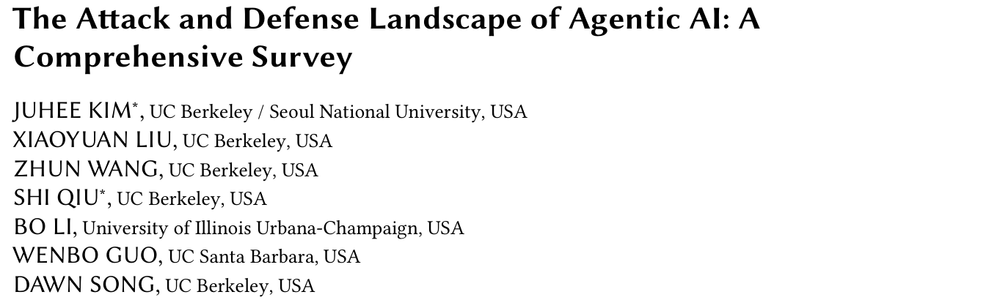
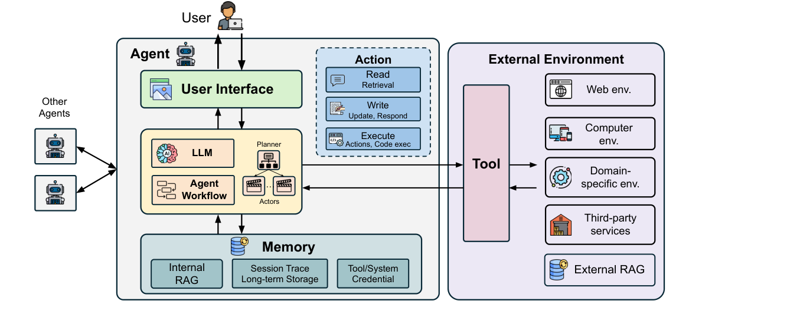
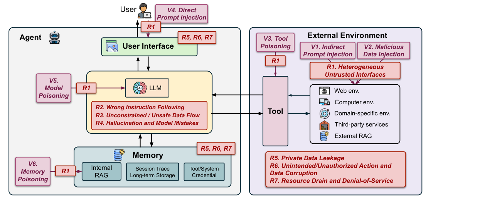
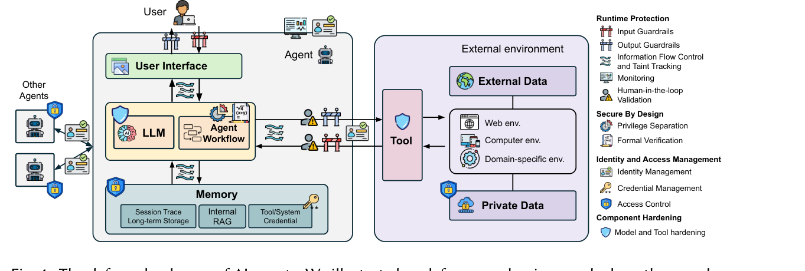
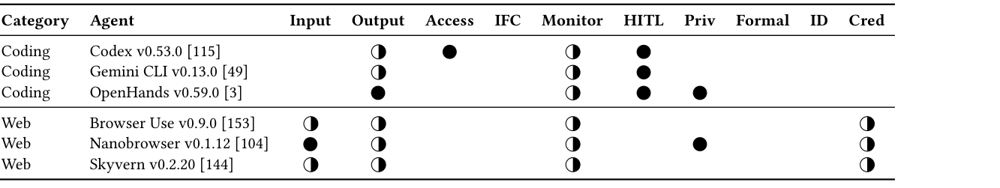
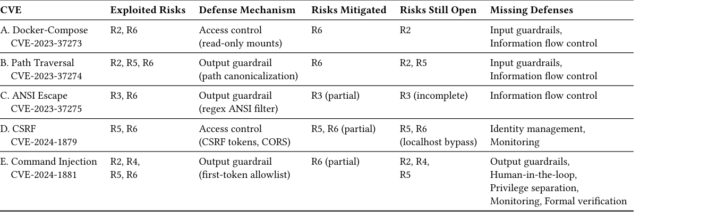

本文看点
01
128篇文献的攻防全景SoK
02
6类攻击向量对7类风险
03
AutoGPT五个CVE补丁均治标
01
PAPER INFO
论文信息
【论文题目】The Attack and Defense Landscape of Agentic AI: A Comprehensive Survey
【论文链接】https://arxiv.org/abs/2603.11088

— 论文题头
本文由 UC Berkeley 领衔，联合 UIUC 与 UC Santa Barbara 完成，通讯作者是安全领域的传奇人物 Dawn Song，作者中还有 Bo Li、Wenbo Guo 等 AI 安全方向的活跃学者。这是一篇 SoK（Systematization of Knowledge）性质的综述，系统梳理了 2023 年至 2025 年 10 月的 128 篇文献（51 篇攻击、60 篇防御），检索范围覆盖四大安全顶会与主流 ML 会议。
02
OVERVIEW
导读
AI Agent 是"LLM + 传统软件组件"的混合系统：既有模型的灵活推理，又有工具、记忆、多智能体协作这些系统组件。这种混合带来了与传统软件、与单体 LLM 都根本不同的安全挑战，但此前的研究要么只盯着提示注入一个点，要么只看单个组件。这篇综述给出了第一张完整的"作战地图"：7 个设计维度刻画 Agent 的灵活性与风险的关系，6 类攻击向量对应 7 类安全风险，4 大防御家族覆盖 13 种机制，再用 6 个真实开源 Agent 和 AutoGPT 的 5 个 CVE 做实证检验。一句话结论：学界画清了问题空间，但实用的通用防御仍然缺位。
03
DESIGN
设计维度：灵活性即攻击面
作者先把"Agent 是什么"讲清楚：LLM 是大脑，workflow 编排规划者与执行者，memory 存知识与轨迹，tool 连接外部环境，加上用户界面，构成一个混合软件系统。

— 图1：AI Agent 的标准结构：LLM 与工作流居中，上接用户界面，下连记忆，通过工具与外部环境交互，并可扩展为多智能体系统
在此之上提炼出 7 个正交的设计维度：输入信任、访问敏感度、工作流、行动能力、记忆、工具、用户界面。每个维度都是一条从"最保守"到"最灵活"的光谱，比如工作流从固定脚本到 LLM 动态决定，记忆从无状态到跨会话持久化。核心规律是：每往灵活端走一步，攻击面就宽一分。输入信任、记忆、工具三个维度直接扩大攻击入口；工作流灵活性主要放大模型层风险；访问敏感度、行动能力、界面复杂度则决定出事后的损失规模。这个"灵活性换安全"的框架还被映射到了 MITRE ATLAS 和 OWASP LLM Top 10，方便与工业界标准对齐。
04
ATTACK
攻击版图：6 个向量，7 类风险
攻击方按接触位置分三档威胁模型：外部攻击者（碰不到 Agent，只能污染它会读的环境）、用户级攻击者（能直接输入）、内部攻击者（控制了部分组件）。对应 6 类攻击向量：间接提示注入（V1）、恶意数据注入（V2）、工具投毒（V3）、直接提示注入（V4）、模型投毒（V5）、记忆投毒（V6）。
风险侧给出 7 类分类：异构不可信接口（R1）、错误指令跟随（R2）、无约束数据流（R3）、幻觉与模型失误（R4）、隐私数据泄露（R5）、越权行动与数据损坏（R6）、资源耗尽（R7）。

— 图2：攻击向量 V1 至 V6 与安全风险 R1 至 R7 在 Agent 架构上的落位：外部环境、工具、记忆、模型每一层都有对应的注入点
这套分类最有洞察力的部分是风险级联：R1 扩大入口，让恶意输入够到模型层风险（R2、R3、R4），模型层失守再放大为后果层风险（R5、R6、R7）。微软 Copilot 的 EchoLeak 漏洞就是教科书案例：一封嵌入恶意文档的企业邮件利用不可信接口（R1），触发检索管线的无约束数据流（R3），最终把敏感数据外传到攻击者服务器（R5），全程零点击。
05
DEFENSE
防御版图：四大家族与"上下文安全"
防御侧被系统化为四大家族：运行时保护（输入/输出护栏、信息流控制与污点追踪、监控、人机确认）、架构安全（权限分离、形式化验证）、身份与访问管理（身份、访问控制、凭据管理）、组件加固（模型加固、工具加固）。每种机制都给出了设计维度、代表工作和开放挑战。

— 图3：防御机制在 Agent 系统中的部署位置：13 种机制分属运行时保护、架构安全、身份与访问管理、组件加固四大家族
值得注意的两点。一是作者在 CIA 三元组之外提出 Agent 特有的第四个安全目标"上下文安全"：Agent 的行为必须与用户意图的上下文对齐，防的是指令覆盖、上下文漂移、不安全工具选择这类攻击。二是防御组合并不天然安全：机制叠加可能产生"涌现失配"，比如上游清洗器把下游护栏依赖的安全指令剥掉了。纵深防御需要全栈协同设计，不是堆砌。
06
CASE STUDY
实证：真实 Agent 与 AutoGPT 解剖
对 6 个主流开源 Agent（Codex、Gemini CLI、OpenHands 三个编程类；Browser Use、Nanobrowser、Skyvern 三个网页类）的防御覆盖实测，结果一目了然：

— 图4：六个真实 Agent 的防御覆盖：编程类靠人机确认和访问控制约束行动，网页类靠输入护栏和凭据保护，而信息流控制与身份管理两列全线空白
编程 Agent 的策略是"管住手"（输出护栏 + 人机确认 + 沙箱），网页 Agent 是"管住嘴"（输入过滤 + 凭据打码），但信息流控制和身份管理两列全线空白，监控普遍只有事后日志没有实时检测。
AutoGPT 的纵深案例更扎心。作者追踪了它的 5 个真实 CVE：docker-compose 配置覆写、路径穿越、ANSI 转义欺骗、CSRF、命令注入（首 token 白名单被链式命令绕过）。逐一对照补丁后发现一个共同模式：所有补丁都在下游堵后果（加访问控制、清洗输出），没有一个处理上游根因，也就是触发这一切的间接提示注入（R2）和无约束数据流（R3）。源头不断，变种攻击就会一直来。

— 图5：AutoGPT 五个 CVE 的防御分析：每个补丁缓解的风险、仍然敞开的风险与缺失的防御类别，间接提示注入这个源头始终未被处理
07
TAKEAWAYS
启发与点评
对研究者：这篇 SoK 的价值是给了整个领域一套通用坐标系，以后讨论 Agent 攻防可以直接用 V几 对 R几 说话。它点出的空白就是选题清单：轻量可用的信息流控制（现有方案开销大到没人部署）、可组合的防御（避免涌现失配）、标准化的 Agent 身份体系、贴近真实部署的评测框架。"上下文安全"作为 CIA 之外的第四目标能否形式化，也是个开放的理论问题。
对从业者：拿 6.1 和 6.2 节当自查清单用。如果你在选型或自建 Agent，对照那张防御覆盖表问三个问题：不可信内容进入模型前有没有过滤？敏感操作有没有确认或沙箱？凭据是不是明文躺在环境变量里？AutoGPT 的教训则提醒安全团队：给 Agent 修漏洞时，问一句这个补丁堵的是后果还是源头，只堵后果的补丁意味着这个 CVE 还会换个马甲回来。
一点观察：把这张地图和我们之前解读的 MalSkillBench 放在一起看很有意思：恶意 Skill 正是工具投毒（V3）与间接提示注入（V1）在真实生态的规模化落地，而综述实测发现真实 Agent 对这两个向量的防御恰恰最薄弱。Agent 的工具生态（Skill、MCP 服务器、第三方连接器）正在复刻包管理生态的信任结构，也在复刻它的攻击面。供应链安全的既有经验，比如可信仓库、签名分发、来源审计，很可能就是 Agent 生态下一步要补的课。